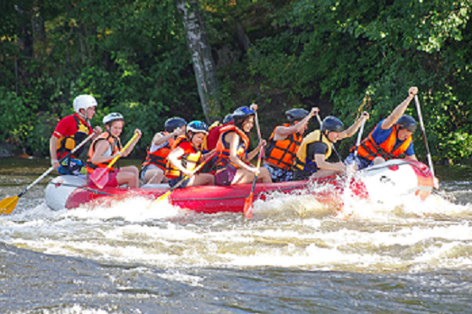
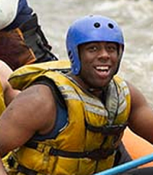

Our mission and purpose is that the client can feel the whitewater rafting, a type of recreation that involves navigating a non-motorized watercraft down free-flowing rivers. You can find trips with us. We provide watercraft, life jackets, and experienced guides to take passengers down a river. Our motivation is to provide a thrilling and safe experience to individuals and groups.


Iztac Rafting
History
Our history began in 1980, when a group of friends went rafting once a month. In 1985, they realized that they could create a company that would share their love for rafting with other people. With their experience, they could provide special trips for the whole family. You can feel comfortable and safe with the best security and experience from all these years.